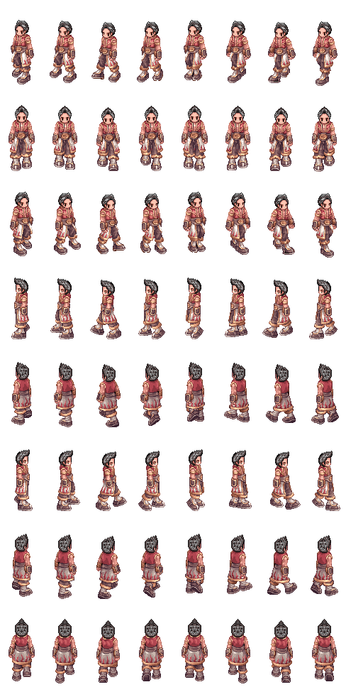

This will lag severely when the window is not in focus due to the event loop being drastically slowed.
It may also jitter because of inconsistent timing of packets arriving. Some of that has been mitigated by checking the times on packets, but it won't account for any lag, so there might be jitter or jumps. This is avoided with a much more advanced technique called "play out delay", but depending on the implementation, that might be under very heavy patents.
